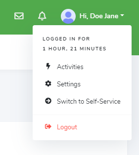
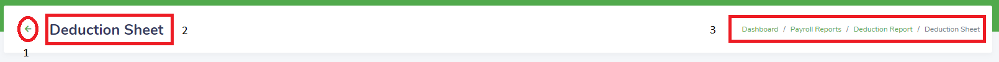
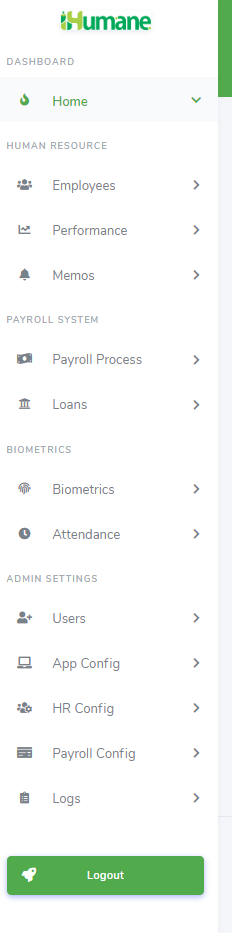
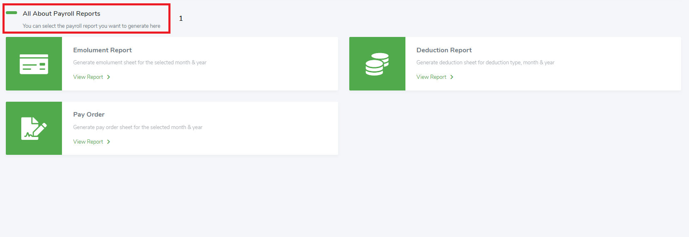
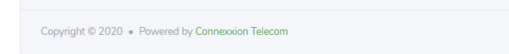

AP Organization & Navigation
The AP of the IH Web application is a browser-based interface that is used to perform administrative tasks. The interface has the following parts:
Top Banner
The top banner (Figure 5), is across the top of the interface.
Figure 5: IH AP Top Banner
The top banner has the following navigation controls:
- The side menu toggle which retracts or expands the side menu. When the side menu is retracted, the task lists are hidden and replaced with their icons. Hovering over these icons displays the tasks and their sub tasks. Clicking on the icon or any of the listed subtasks will display the task in the work area.
- The notification icon which indicates unread notifications relevant to the current user. Clicking the notification icon will display the unread notifications. Clicking on any unread notification will display the related task in the work area.
- The quick action options for the current user. Clicking the quick action options will display the duration of the current user’s session and the following actions (Figure 6): activities, settings, switch to self-service (for Moderators), and logout.
Figure 6: IH AP Quick Action Options
|  |
- Activities
If the current user has appropriate permissions, clicking on activities displays the logs of all tasks performed on the IH system. - Settings
If the current user has appropriate permissions, clicking on settings displays the application settings for the IH system. - Switch to Self-Service
If the current user is a Moderator user type, clicking on switch to self-service opens the SSP for the user. - Logout
Clicking on logout logs the user off the IH system by removing the user’s credentials from the Web application server.
Task Bar
The task bar (Figure 7), is immediately below the top banner.
Figure 7: IH AP Task Bar
|  |
The task bar has the following navigation controls:
- The return icon. Clicking the return icon will return the user to a preceding task view. This is true for all tasks or nested subtasks not listed in the side menu.
- The task name indicates the current task view being displayed in the work area.
- The breadcrumb trail shows the task views through which the user has navigated to reach the current task view in the work area. The last task view listed in the breadcrumb trail is the current task view in the work area. To return to any task view shown in the breadcrumb trail, click the task view title in the breadcrumb trail; the task view is displayed in the work area.
Side Menu
The side menu (Figure 8), which is on the left side of the interface next to the top banner, task bar, work area and bottom banner, shows the tasks the user can perform.
Note: Some tasks might be defined as reserved tasks; if so, these tasks are displayed in the side menu only for the users who are permitted to access them. See User Access Considerations.
Figure 8: IH AP Side Menu
|  |
The side menu has the following navigation control:
- The logout button logs the user off the IH system by removing the user’s credentials from the web application server
The default side menu contains the following tasks and subtasks:
- Home
- Dashboard: view the AP dashboard
- Employees
- New Employee: access the form for employee creation
- Manage Employees: view all employees in the IH system and perform given actions on each employee
- Employee Transfers: view all employee transfers conducted on the system and initiate new transfers
- Employee Leaves: view all employee leaves, perform given actions on each employee leave, and initiate new leaves
- Performance
- Employee Appraisal: view all employee appraisals, perform given actions on each appraisal, and initiate new appraisals
- Employee Terminations: view all employee terminations
- Employee Resignations: view all employee requests for resignations
- Employee Trainings: view all employee trainings, perform given actions on finished trainings, and initiate new trainings
- Memos
- Announcements: view all company announcements and create new announcements
- Directives: view all company directives and create new directives
- Payroll Process
- Salary Structures: view all employee salary structure and perform given actions on employee salary structures including setting up new salary structures.
- Variational Payments: view all employee variational payments, their corresponding status, and add new variational payments
- Approve Payments: view all unapproved employee variational payments and select variational payments to be approved
- Payroll Routine: run payroll routine for the current payroll month and year
- Approve Routine: approve the payroll routine that was run in Payroll Routine
- Payroll Reports: select payroll report to run from emolument report, deduction report and pay order
- Loans
- New Loan: access the form for creating a loan for employees
- Manage Loans: view all loan applications and perform given actions on each loan application
- Biometrics
- Biometric Enrollment: enroll employee fingerprints and clock in enrolled employees
- Attendance
- Clock In: clock in all employees not yet clocked in
- Attendance Reports: select attendance report to run from today’s present employees, today’s absent employees, present employees, absent employees, clock out – today, and clock out – date
- Users
- Manage Users: view all users, perform given actions on each user, and add new user
- App Config
- HR Config
- Bank Setup: view all banks, perform given actions on each bank, and add new bank
- Pension Setup: view all pension provides, perform given actions on each pension provider, and add new pension provider
- HMO Setup: view all HMOs, perform given actions on each HMO, and add new HMO
- Department Setup: view all company departments, perform given actions on each department, and add new department
- Grade Setup: view all grade levels, perform given actions on each grade level, and add new grade levels
- Job Roles Setup: view all job roles, perform given actions on each job role, and add new job role
- Location Setup: view all company locations, perform given actions on each location, and add new locations
- Appraisal Setup: select assessment questions to set from self-performance assessment, quantitative assessment, qualitative assessment, and supervisor assessment
- Qualification Setup: view all educational qualifications, perform given actions on each qualification, and add new qualification
- Subsidiary Setup: view all company subsidiaries, perform given actions on each subsidiary, and add new subsidiary
- Leave Type Setup: view all leave types, perform given actions on each leave type, and add new leave type
- Training Setup: view all company trainings, perform given actions on each training, and add new training
- Documents: view all company documents, perform given actions on each document, and upload new document
- Payroll Config
- Payment Definition: view all payment definitions, perform given actions on each payment definition, and add new payment definition
- Tax Rates: view all tax rates, perform given actions on each tax rate, and add new tax rate
- Salary Structure: view all salary structure categories, perform given actions on each salary structure category, and add new salary structure category
- Salary Allowances: view all salary allowances, perform given actions on each salary allowance, and add new salary allowances
- Payroll Month/Year: set the current payroll month/year
- Minimum Tax Rate: set the minimum tax rate
- Pension Rate: set the pension rate
- Logs
- View Logs: view all user activities on the system
Work Area
The work area (Figure 9), which is located to the right of the side menu under the task bar, is where your primary interaction with the Web application occurs. The interface has only one work area. To resize the work area, take one of the following actions:
- Retract the side menu with the side menu toggle in the top banner
- Resize the browser window
Figure 9: IH AP Work Area
|  |
The work area includes a hero message (1) that summarizes the task you are currently displaying (except for the AP dashboard task view), and the task to perform below the hero message.
Task views contain common elements such as entry fields, tables, and buttons.
Some views contain entry fields to filter requests for data. When you specify information for a task or complete forms to store data in the system, you must provide information for any field marked with an asterisk (*).
Other views display data in tables; for more information about tables, see 3.4.3 Working with Tables. The following buttons are common to most tasks:
- The submit button submits a request to store or retrieve data. If the request is successful, a message will usually display indicating success followed by the resulting view which is displayed in the work area. Typically, if the request is not successful, the entry field in error is marked red with an invalid feedback also in red beneath it. An error message prompt might also be displayed if all entry fields are good and the request is still unsuccessful.
- The back button returns the previous view to the work area.
- The reset button refreshes all entry fields to the task default.
Bottom Banner
The bottom banner (Figure 10), which is located to the right of the side menu and under the work area, displays copyright information for the IH Web application.
Figure 10: IH AP Bottom Banner
|  |